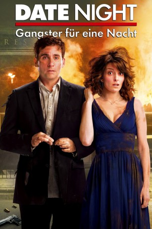

#1843 Date Night - Gangster für eine Nacht
Alternativ: Date Night
 
 IMDB-Wertung: 6.3 / 10
IMDB-Wertung: 6.3 / 10  Metascore: 56
Metascore: 56 
Das Ehepaar Claire und Phil Foster (Tina Fey und Steve Carell) führt ein glückliches aber doch etwas lahmes Familienleben und erliegt immer mehr dem Alltag. Auch das Ausgehen ist zur gähnenden Routine geworden. Um ihrer Ehe wieder etwas mehr Pepp zu geben, planen sie ein gemeinsames Abendessen in einem der angesagtesten Restaurants in Manhattan. Hier kommt es zu einer Verwechslung mit dem Ehepaar Tripplehorn (Mila Kunis und James Franco), was den Fosters von da an eine wilde Nacht quer durch New York beschert. Denn sie werden fälschlicherweise für die Tripplehorns gehalten und die sind ganz offensichtlich kein normales Durchschnittspaar. Zu Wasser, zu Lande und in der Luft werden Claire und Phil Foster ab sofort von bösen Gangstern gejagt und sie müssen alle Tricks anwenden, die sie sonst nur aus dem Fernsehen kennen, um ihre Haut zu retten.
Jahr: 2010
Dauer: 88 Minuten
FSK: 12
Land: USA Studio: 20th Century FoxTonspuren: DTS - ,
Untertitel: Deutsch,
Auflösung: 1080p (1920x816) Größe: 6266 MB
Genre: Komödie, Krimi, Liebe, Thriller
Regisseur: Shawn Levy
Drehbuch: Josh Klausner
Soundtrack: Christophe Beck
Darsteller:
 Steve Carell als Phil Foster
Steve Carell als Phil Foster Tina Fey als Claire Foster
Tina Fey als Claire Foster Mark Wahlberg als Holbrooke
Mark Wahlberg als Holbrooke Taraji P. Henson als Detective Arroyo
Taraji P. Henson als Detective Arroyo Jimmi Simpson als Armstrong
Jimmi Simpson als Armstrong Common als Collins
Common als Collins William Fichtner als DA Frank Crenshaw
William Fichtner als DA Frank Crenshaw Leighton Meester als Katy
Leighton Meester als Katy J.B. Smoove als Cabbie
J.B. Smoove als Cabbie Kristen Wiig als Haley Sullivan
Kristen Wiig als Haley Sullivan Mark Ruffalo als Brad Sullivan
Mark Ruffalo als Brad Sullivan James Franco als Taste
James Franco als Taste Mila Kunis als Whippit
Mila Kunis als Whippit Bill Burr als Detective Walsh
Bill Burr als Detective Walsh Jonathan Morgan Heit als Oliver Foster
Jonathan Morgan Heit als Oliver Foster- Savannah Paige Rae als Charlotte Foster
 Nick Kroll als Claw Maitre D'
Nick Kroll als Claw Maitre D' Olivia Munn als Claw Hostess
Olivia Munn als Claw Hostess Gal Gadot als Natanya
Gal Gadot als Natanya Lauren Weedman als Wendy
Lauren Weedman als Wendy- Jaye Razor als Peppermint Hippo Doorman
 Gillian Vigman als House-Hunting Woman
Gillian Vigman als House-Hunting Woman Jon Bernthal als Young Man
Jon Bernthal als Young Man Ari Graynor als Young Woman
Ari Graynor als Young Woman Will.i.am als Will.I.Am
Will.i.am als Will.I.Am- Sho Brown als VIP Thug
- Jahnel Curfman als Exotic Dancer #1
- Stella Angelova als Exotic Dancer #2
- Joe Starr als Miletto Thug #1
 John Cenatiempo als Miletto Thug #2
John Cenatiempo als Miletto Thug #2- Katie Gill als Claw Hottie
- Stacey Scowley als Book Club Member
- Kat Howland als VIP Room Dancer #2
- Alandrea Martin als VIP Room Dancer #3
- Jeff Barry als Columbia Student , uncredited
 Samantha Bee als Woman in Times Square , uncredited
Samantha Bee als Woman in Times Square , uncredited- Theo Breaux als Nubian Dancer , uncredited
- Etalvia Cashin als Model , uncredited
- Michelle Celeste als Restaurant Patron , uncredited
- Natalie Cohen als Burlesque Dancer , uncredited
 Peter Conboy als New York City Police Officer , uncredited
Peter Conboy als New York City Police Officer , uncredited- Tracy Dali als Nubian Dancer , uncredited
- Tony DeSean als Model , uncredited
- Jim Garrity als Successful Financier , uncredited
 Jeff Grossman als Mob Thug , uncredited
Jeff Grossman als Mob Thug , uncredited Jason Jones als Man in Times Square , uncredited
Jason Jones als Man in Times Square , uncredited- Keven Kaddi als Bar Patron , uncredited
 Ray Liotta als Joe Miletto , uncredited
Ray Liotta als Joe Miletto , uncredited- Karina Michel als Model , uncredited
- Kate Rogal als Jade , uncredited
Datei: X:\2010(A-F)\Date Night - Gangster für eine Nacht (2010, FSK12, 1920x816).mkv seit 27.08.2015
Festplatte: HD 2009(G-Z)-2010(A-F)
 Es gibt insgesamt 95 Filme in der Gruppe '2010(A-F)'
Es gibt insgesamt 95 Filme in der Gruppe '2010(A-F)'